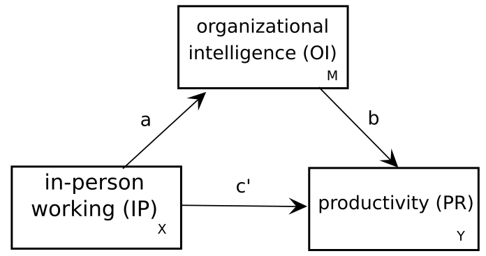

For this chapter we’ll go through the steps to estimate a mediation model, including calculation of direct and indirect effects (see lecture for definitions).
The basic structure of a mediation model is as shown in Figure 8.1 below.

Figure 8.1: A basic three-variable mediation structure
In this example, we are interested in the effect on productivity of having people work on-site in an office (in-person working, or IP) versus at home. Let’s say that we have surveyed 1,000 firms and calculate the proportion of employees located at the main worksite (IP) and obtained a measure of each firm’s productivity (PR). Download the (simulated; not real) data if you want to follow along.
## first load in the datalibrary("tidyverse")library("lavaan")wpdat <-read_csv("data/workplace.csv", col_types ="ddd")wpdat
To begin, let’s look at the unmediated association between in-person working and productivity. We can do this with just a very simple regression model.
mod_unmediated <-lm(PR ~ IP, data = wpdat)summary(mod_unmediated)
Call:
lm(formula = PR ~ IP, data = wpdat)
Residuals:
Min 1Q Median 3Q Max
-41.358 -8.025 0.259 8.522 38.115
Coefficients:
Estimate Std. Error t value Pr(>|t|)
(Intercept) 69.600 1.771 39.291 < 2e-16 ***
IP 16.193 3.541 4.574 5.39e-06 ***
---
Signif. codes: 0 '***' 0.001 '**' 0.01 '*' 0.05 '.' 0.1 ' ' 1
Residual standard error: 12.26 on 998 degrees of freedom
Multiple R-squared: 0.02053, Adjusted R-squared: 0.01955
F-statistic: 20.92 on 1 and 998 DF, p-value: 5.393e-06
From this model, we can see that the higher the proportion of in-person workers, the higher the productivity (with productivity measured on a scale 1-100). The coefficient of 16.193 means that if we increase the proportion of workers on-site by .3, productivity would go up by about 4.858 points.
Let’s assume that you have a theory about why in-person working is important for productivity—namely, that in-person interaction is critical for the development of “organizational intelligence” (OI), which might be thought of as the extent to which a typical worker understands the various roles and practices of the organization, allowing them to see how their own efforts fit into the whole and thus to work more fluidly with others as a team.
So to test this, we’d want to know whether (1) the causal path \(IP \rightarrow OI \rightarrow PR\) is statistically significant, and (2) what proportion of the total effect of \(IP\) on \(PR\) is explained by this mechanism versus other remaining (unmeasured) variables that account for the relationship. We may also want to know (3) whether the statistically significant direct effect of IP on PR ‘survives’ after controlling for the mediated effect via OI.
The mediated effect \(IP \rightarrow OI \rightarrow PR\) can be calculated as the product \(a \times b\) where \(a\) and \(b\) are the path coefficients shown in Figure 8.1. This tells you how much of a unit change in IP is transmitted to PR through OI.
The total effect is then \(ab + c'\), where \(c'\) is the effect on PR or IP *after controlling for the mediated effect of IP on PR through OI.
8.1 Fitting mediation models
Let’s take a look at how to fit the model and estimate these effects in lavaan.
We can specify the model one of two ways, either as two or three regression equations. Both models will be equivalent, but using two equations (one for each endogenous variable) is the more typical approach.
library("lavaan")mod_med_2 <-"# path aOI ~ IP# paths b and c'PR ~ OI + IP"mod_fit_2 <-sem(mod_med_2, data = wpdat)
We can specify all the paths individually, just to check that the model is the same.
lhs op rhs est se z pvalue ci.lower ci.upper
1 OI ~ IP 22.978 3.020 7.608 0.000 17.059 28.898
2 PR ~ IP 0.162 2.922 0.055 0.956 -5.565 5.888
3 PR ~ OI 0.698 0.030 23.458 0.000 0.639 0.756
4 IP ~~ IP 0.012 0.000 NA NA 0.012 0.012
5 OI ~~ OI 109.309 4.888 22.361 0.000 99.728 118.890
6 PR ~~ PR 96.697 4.324 22.361 0.000 88.221 105.172
If we compare to the parameter estimates for the 2 equation syntax, we can see that they are identical.
lhs op rhs est se z pvalue ci.lower ci.upper
1 OI ~ IP 22.978 3.020 7.608 0.000 17.059 28.898
2 PR ~ IP 0.162 2.922 0.055 0.956 -5.565 5.888
3 PR ~ OI 0.698 0.030 23.458 0.000 0.639 0.756
4 IP ~~ IP 0.012 0.000 NA NA 0.012 0.012
5 OI ~~ OI 109.309 4.888 22.361 0.000 99.728 118.890
6 PR ~~ PR 96.697 4.324 22.361 0.000 88.221 105.172
Let’s look at the model output, including \(R^2\) and standardized estimates.
lavaan 0.6-19 ended normally after 1 iteration
Estimator ML
Optimization method NLMINB
Number of model parameters 5
Number of observations 1000
Model Test User Model:
Test statistic 0.000
Degrees of freedom 0
Parameter Estimates:
Standard errors Standard
Information Expected
Information saturated (h1) model Structured
Regressions:
Estimate Std.Err z-value P(>|z|) Std.lv Std.all
OI ~
IP 22.978 3.020 7.608 0.000 22.978 0.234
PR ~
OI 0.698 0.030 23.458 0.000 0.698 0.606
IP 0.162 2.922 0.055 0.956 0.162 0.001
Variances:
Estimate Std.Err z-value P(>|z|) Std.lv Std.all
.OI 109.309 4.888 22.361 0.000 109.309 0.945
.PR 96.697 4.324 22.361 0.000 96.697 0.632
R-Square:
Estimate
OI 0.055
PR 0.368
Our model is just-identified (\(df = 0\)), meaning that the model fit is perfect and we have no additional degrees of freedom for considering measures of model fit. We can also see that our model gives us an \(R^2\) of 0.368 for the endogenous variable PR, which means that it accounts for about 36.8% of the variation in productivity. We can also see that the effect of in-person work only accounts for about 5.5% of the variation in organizational knowledge, indicating that there is much more to learn about how such knowledge develops. Finally, we can see from the output that the direct effect \(c'\) (PR ~ IP; \(p = 0\\.956\)) is not significant in this model (it did not ‘survive’ controlling for the mediation). We should be careful not to accept the null hypothesis, however; we would have to perform a more stringent analysis such as an equivalence test before doing so.
8.2 Calculating indirect effects
What’s missing from the output above are calculations of the indirect effect, the total effect, and the proportion of the total effect explained by the indirect effect. We could compute these from the output using simple arithmetic, but then we would lack information about their standard errors.
To get these values we need to update the model syntax and include calculations by using the x := ... operator, which you can think of as variable x “is calculated as” (whatever is on the right hand side). Using this syntax you can do arbitrary calculations and get statistical information in the output.
However, to perform such calculations we first need to be able to give model parameters predictable names. Up to now, when we specified a regression model in lavaan we’ve followed the standard R model syntax, where the regression coefficients are omitted.
However, we can also use a lavaan-specific syntax where we give the coefficients names. So, y ~ x would be the same as y ~ b1 * x. This will tell lavaan to give the coefficient for x the name b1 rather than just choosing some default name. This allows us to refer to it again later. We’re limited in our names to using alphanumeric characters (e.g., A-Z and 0-9). So we can’t legally call something c' but we can call it cprime.
mod_med_names <-"# path aOI ~ a * IP# paths b and c'PR ~ b * OI + cprime * IP"mod_fit_names <-sem(mod_med_names, data = wpdat)parameterEstimates(mod_fit_names)
lhs op rhs label est se z pvalue ci.lower ci.upper
1 OI ~ IP a 22.978 3.020 7.608 0.000 17.059 28.898
2 PR ~ OI b 0.698 0.030 23.458 0.000 0.639 0.756
3 PR ~ IP cprime 0.162 2.922 0.055 0.956 -5.565 5.888
4 OI ~~ OI 109.309 4.888 22.361 0.000 99.728 118.890
5 PR ~~ PR 96.697 4.324 22.361 0.000 88.221 105.172
6 IP ~~ IP 0.012 0.000 NA NA 0.012 0.012
Now we can expand the syntax further to compute or mediation statistics.
mod_med_stats <-"# regression equationsOI ~ a * IPPR ~ b * OI + cprime * IP# compute mediation stats; indir = indirect effectindir := a * btotal := indir + cprimeprop := indir / total"mod_fit_stats <-sem(mod_med_stats, data = wpdat)parameterEstimates(mod_fit_stats)
lhs op rhs label est se z pvalue ci.lower ci.upper
1 OI ~ IP a 22.978 3.020 7.608 0.000 17.059 28.898
2 PR ~ OI b 0.698 0.030 23.458 0.000 0.639 0.756
3 PR ~ IP cprime 0.162 2.922 0.055 0.956 -5.565 5.888
4 OI ~~ OI 109.309 4.888 22.361 0.000 99.728 118.890
5 PR ~~ PR 96.697 4.324 22.361 0.000 88.221 105.172
6 IP ~~ IP 0.012 0.000 NA NA 0.012 0.012
7 indir := a*b indir 16.032 2.215 7.237 0.000 11.690 20.374
8 total := indir+cprime total 16.193 3.537 4.578 0.000 9.261 23.126
9 prop := indir/total prop 0.990 0.179 5.539 0.000 0.640 1.340
Now we get statistics for the computed values in the output. Note that the \(z\) statistic in the output is our test statistics. For the indirect effect, this is known as the Sobel statistic. This test assumes normality, but assumption is unlikely to hold when we are looking at the distribution of an estimator calculated as a product. So, a better method to use for getting standard errors is bootstrapping, which we can specify in the call to sem() using the argument se="boot". Let’s re-fit the model. This will take longer due to the bootstrapping.
mod_fit_boot <-sem(mod_med_stats, data = wpdat, se ="boot")
Warning: lavaan->lav_model_nvcov_bootstrap():
19 bootstrap runs failed or did not converge.
We got a warning about non-convergence when re-fitting the model to the bootstrapped data. This can happen sometimes. The default number of bootstrap samples is 1,000, so we don’t have to worry too much about losing data for 19 of them. But if there had been more than 19 instances, we might want to increase the number of bootstrap samples (see ?lavOptions for information).
parameterEstimates(mod_fit_boot)
lhs op rhs label est se z pvalue ci.lower ci.upper
1 OI ~ IP a 22.978 2.978 7.716 0.000 17.240 28.979
2 PR ~ OI b 0.698 0.031 22.374 0.000 0.634 0.760
3 PR ~ IP cprime 0.162 2.822 0.057 0.954 -5.386 5.500
4 OI ~~ OI 109.309 4.827 22.646 0.000 100.536 118.833
5 PR ~~ PR 96.697 4.243 22.788 0.000 88.222 104.994
6 IP ~~ IP 0.012 0.000 NA NA 0.012 0.012
7 indir := a*b indir 16.032 2.153 7.445 0.000 11.881 20.296
8 total := indir+cprime total 16.193 3.427 4.725 0.000 9.554 22.642
9 prop := indir/total prop 0.990 0.217 4.571 0.000 0.736 1.499
From the output we can see that our estimated mediation effect is 16.032, which is statistically significant, \(z = 7\\.445\), \(p < \\.001\). We can also see that the mediation effect accounts for about 99.0% of the total effect.